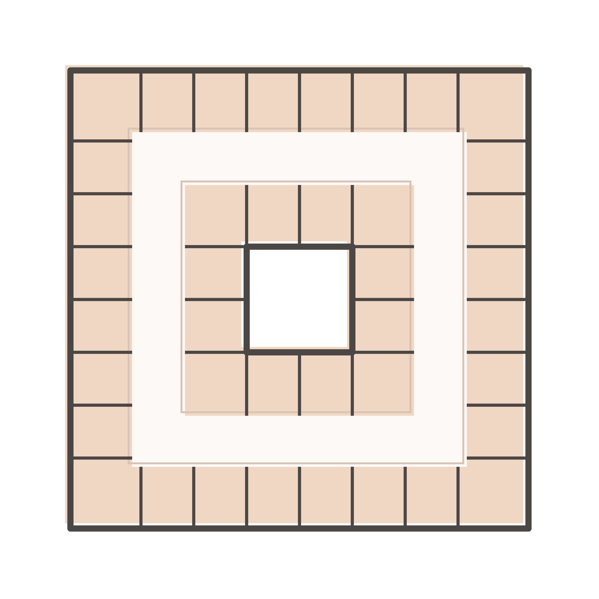
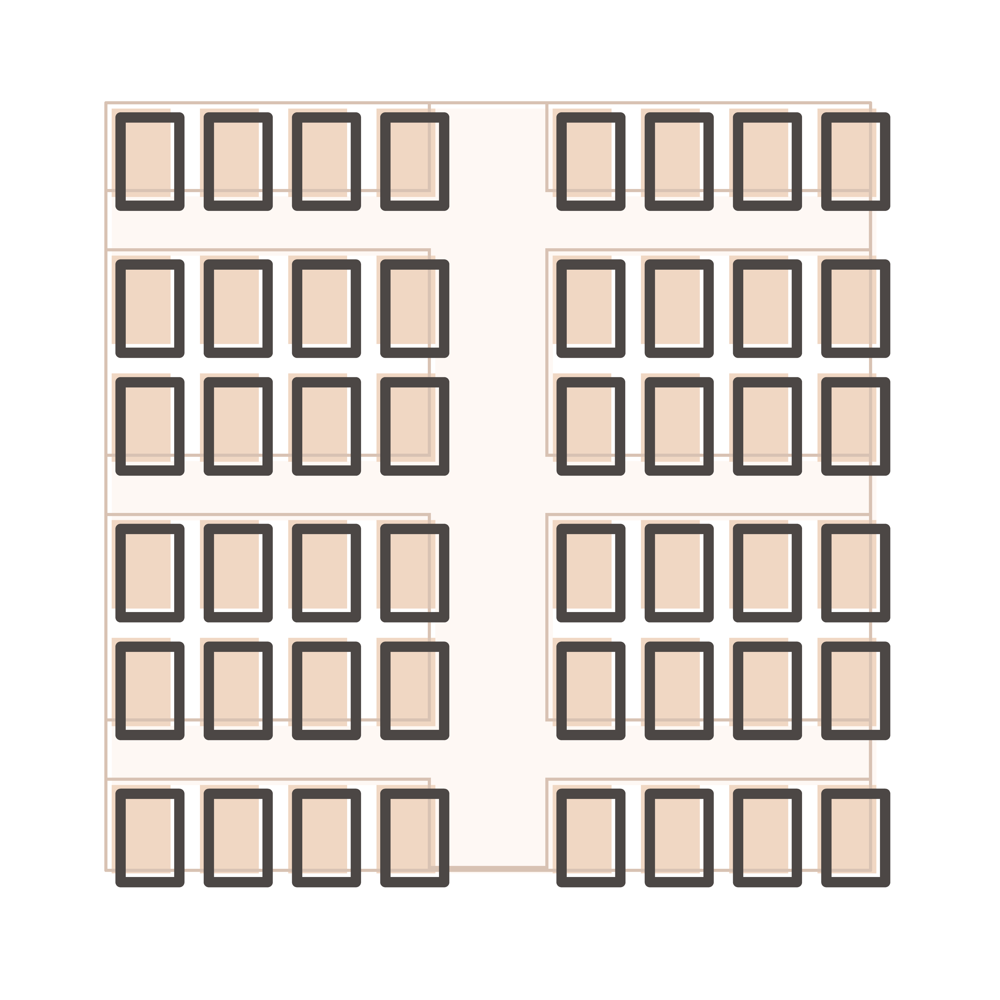
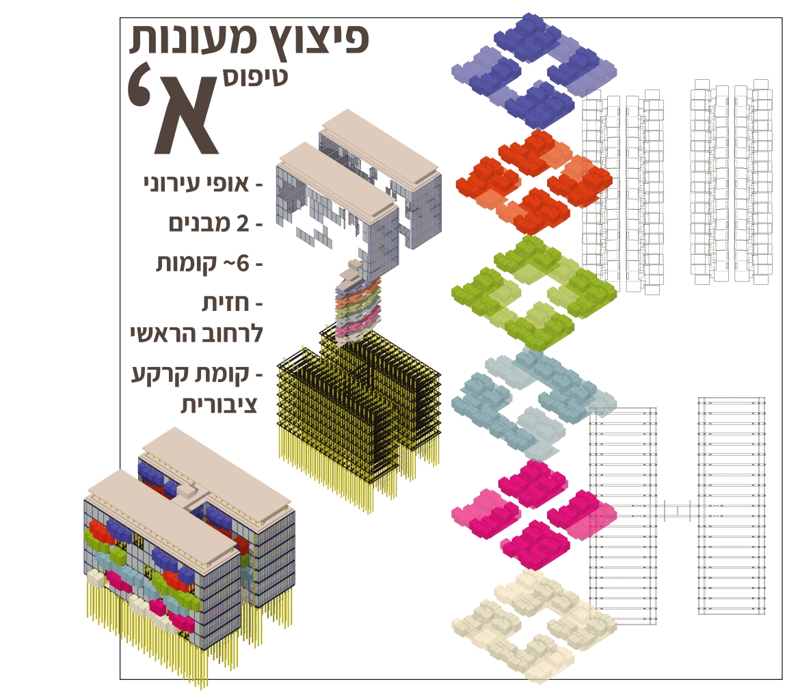
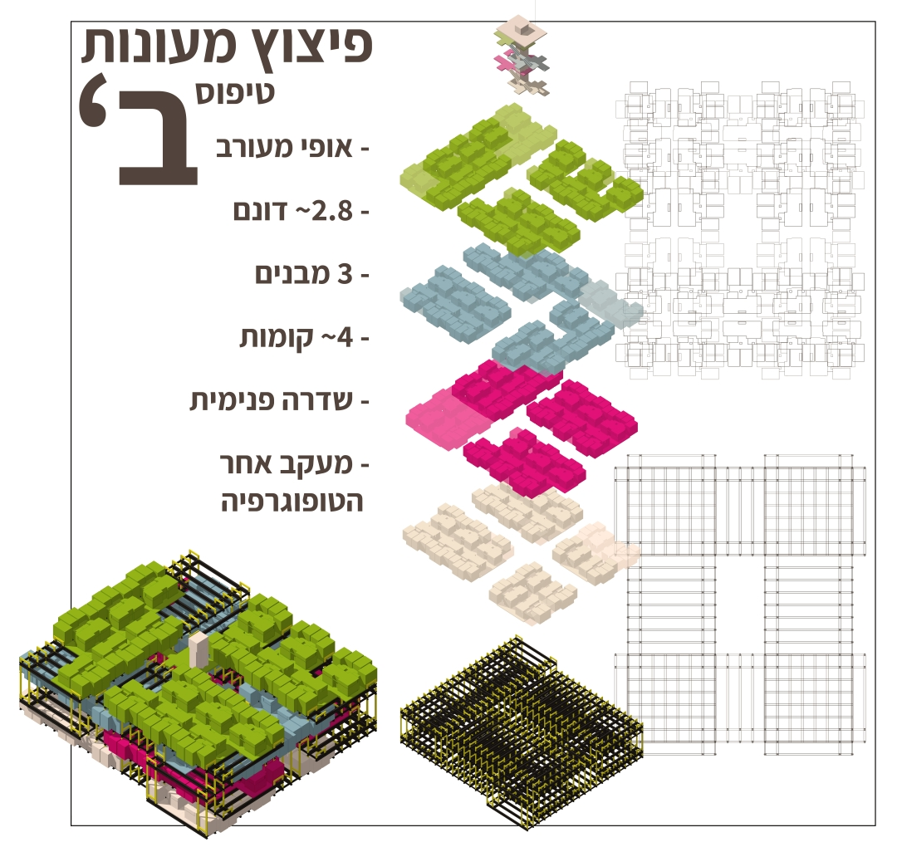
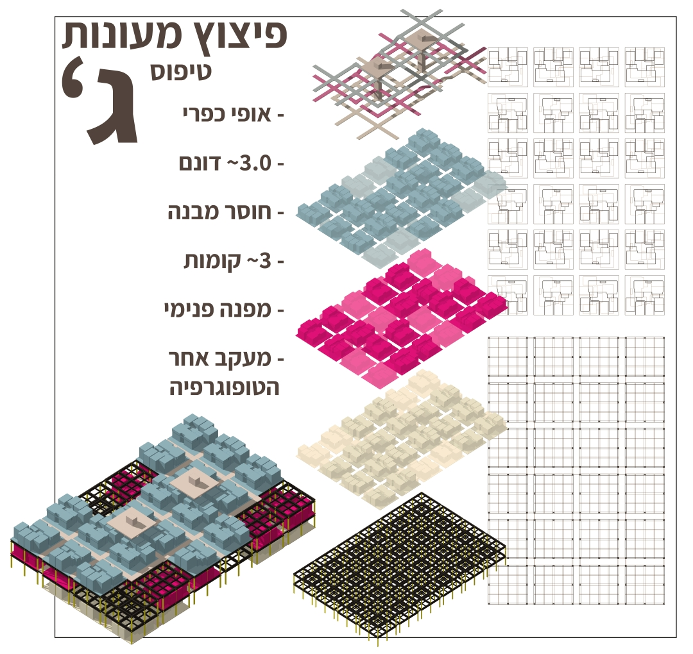

Select a project
to explore.
Research, design, and industry work — all connected by a single thread: using empirical methods to understand how space shapes human behaviour.
Context & Challenge
Architectural theory frequently claims that physical environments shape human communities, yet these assertions often rely on subjective intuition rather than empirical, verifiable validation. This research seminar transitions architectural design into the realm of quantitative science.
Under the supervision of Dr. Arch. Gilad Schweid, this study establishes a rigorous empirical methodology to analyse, measure, and map exactly how micro-architectural and environmental features drive or restrict a psychological "Sense of Community" (SoC) within institutional student housing.
The core of the research evaluated a comparative dataset between two polarised housing archetypes at Ariel University: a structured Mid-rise Compound versus a decentralised Caravan Compound.
The Three Archetypes
The study positions each compound within a studied taxonomy of dorm archetypes — from the inward-facing cluster plex, to the corridor hybrid, to the decentralised scattered plex.
Each typology generates a distinct social ecology. The mid-rise compound reads as a cluster/corridor hybrid; the caravan compound as a scattered plex — two ends of a spectrum chosen precisely because they polarise the variables under test.
Case Study Sites
The Caravan compound spreads roughly 350 scattered units across 0.106 km² in an organic, pedestrian-first layout that prioritises informal contact and buffered outdoor space.
The Mid-rise compound concentrates 1,550 students across numbered building blocks 101–116 on just 0.033 km² — a density of 46,969 students per km², organised around efficient internal corridors.
Research Infrastructure
To orchestrate remote data collection during the pandemic, I designed and co-developed a custom native Android mobile application. The app functioned as a live research platform, capturing standardised psychometric metrics alongside passive background geospatial telemetry.
Privacy-by-Design governed the data pipeline: survey responses were isolated from spatial location metrics. User identities were obfuscated at device edge using a client-side cryptographic hash function. Hyper-local data masking ignored a student's precise coordinate when inside their immediate residential cluster, logging a default centralised anchor instead.
Empirical Findings
Counter to conventional density-driven assumptions, the analysis revealed a clear statistical advantage for the decentralised Caravan Compound over the structured Mid-rise Compound in driving Sense of Community.
Micro-spatial elements — specifically nature integration, visual appeal, and spatial buffer features — proved high-impact drivers of interpersonal trust, outperforming rigid structural density. The study is architected as a modular framework: student housing is the ultimate live testing sandbox for continuous spatial experimentation.
Concept
Traditional residential architecture treats institutional housing as a static, unyielding container — failing to adapt to the fluid needs of its users or address the growing crisis of urban loneliness. NKDT (פרויקט נקודות — "Project Points") reimagines student housing not as a fixed building, but as a live, data-rich architectural laboratory and responsive system.
The project operates on three simultaneous scales — the architectural design laboratory (a dynamic system capable of receiving spatial modifications), the community laboratory (a social environment that reinforces communal bonds against loneliness), and the student dorms (a platform of temporary residents who are unwitting participants in the institutional experiment).
Dormitory Typology Spectrum
The project is positioned within a studied taxonomy of three dominant dorm archetypes — from the inward-facing cluster plex, to the corridor hybrid, to the decentralised scattered plex. Each typology generates a distinct social ecology, and each is embedded as one of the three testable building types within the NKDT precinct.

Urban character · enclosed courtyard · inward social focus · public ground floor

Mixed character · internal spine · ~2.8 dunams · follows topography

Rural/organic character · no central building · inward-facing plots · topography-led
System Architecture & Structural Surplus
At its core: the "Spatial & Structural Surplus" — an intentional structural over-engineering of the grid allowing the infrastructure to support far more spatial permutations than strictly required. This surplus manifests as calculated programmatic voids within floor levels.
As units expand or contract, these voids dynamically shift — mutating internal pathways, changing degrees of physical intimacy between residents, and transforming the building's external facade. The module is the atom of the system: each dorm room is a composite of 2–4 module units, a self-contained workspace, sleeping complex and ventilated space.
Modular flexibility deconstructs traditional corridors, transforming them into shared communal living nodes — the corridor as a living room.
Three Building Typologies
The precinct is divided into three building types, each exploring a different spatial character. The diversity of typologies is itself the testing mechanism — it allows the project to run spatial experiments across a wider matrix of conditions simultaneously.



Research Connection
NKDT directly embeds the empirical findings from the seminar research into its design logic. The quantitative study showed that spatial buffers, nature integration, and local resident autonomy are the primary drivers of Sense of Community — outperforming raw density. The design operationalises each finding as a physical, reconfigurable architectural system: buffer zones are encoded as the structural surplus voids; nature is woven through the topography-following Type B and C layouts; autonomy is preserved through modular unit control.
Acre — Symbiotic Urban Fabric
A proposal allowing Acre to grow as a settlement containing both city and suburb — each reinforcing its distinct character while mutually sustaining the other. The intervention is structured around a symbiotic reading of daily-life opportunities embedded in the urban fabric, proposing a layered spatial system that allows both typologies to coexist and reinforce one another over time.
Tel Aviv — Adaptive Environment
An environment that adapts to field conditions through learning and prediction. A dynamic garden enabling high-quality spatial use by changing topology in real time — responding to live analysis of environmental conditions, expected user configurations, and planned activity. The project explores how rule-based computational geometry can generate architecture that behaves rather than merely exists.
Nomad Hotel — Flexible In-Between
A hospitality experience designed to release guests from the boundaries of daily routine — enabling direct, honest encounter with place, moment, and self. The design focuses on flexible intermediate spaces under a repetitive modular framework, where the quality of the in-between defines the experience rather than the private room itself.
Kibbutz Merchavia — Renovation & Expansion
Developing full building layouts, construction documentation, and high-fidelity 3D architectural models for a 1950s house renovation and expansion. Directly managing real-world spatial, structural, and regulatory constraints within a live professional context — applying BIM methodology in an applied setting rather than academic.
Research Analyst
- Engineered a core Python/PySpark automation framework that unified disparate workflow systems into a single automated pipeline, reducing total runtime by 90% and ensuring complete execution validity.
- Architected an end-to-end automation pipeline for self-service systems, eliminating manual engineering intervention and democratising access for non-technical stakeholders.
- Led methodology alignment across a family of analytics products, establishing standardised experimental protocols.
- Partnered with Research Scientists and Engineering teams on backend infrastructure, making architectural decisions balancing performance, efficiency, and scientific rigour.
- Utilised LLM workflows (Claude Code) to accelerate technical knowledge acquisition and streamline complex debugging.
Data Analyst — Systems & Methodology
- Managed end-to-end execution of a $10M+/year technical testing roadmap, ensuring strict algorithmic validity and data integrity across continuous operational pipelines.
- Implemented multi-layered SQL and data automation workflows to guarantee data quality and detect pipeline contamination.
- Collaborated with Research teams to refine methodologies, automate pipelines, and present papers at Yahoo's internal Tech Pulse conference.
Technical Analyst (Student)
- Automated deployment validation pipelines, reducing time-to-production by ~3 days and saving 25+ developer hours per release.
- Conducted machine learning validation research using Python-based validation methodologies.
Publications & Presentations
Overcoming A/B Test Discrepancy Using Nearest Neighbour Data Imputation
Yahoo internal conference — content confidential
Assessing the Incrementality of Enhanced CPC as a Bidding Strategy in the Gemini Platform
Yahoo internal conference — content confidential
Student Dorms Archetype as a Driving Factor in the Formation of a Sense of Community
dx.doi.org/10.13140/RG.2.2.32000.00001 ↗A quantitative data study analysing spatial data and its relation to community formation metrics